All Fonts
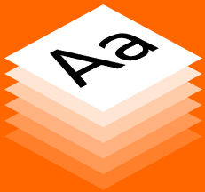
Global Fonts
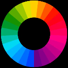
Variable Fonts
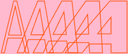
Smart Fonts
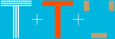
Superfamilies
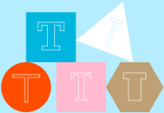
Legibility Fonts
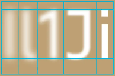
Optical Sizes
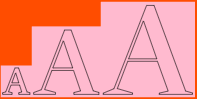
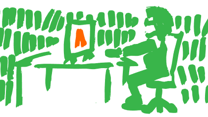
9 Jun 2026Typotheque is looking for a junior graphic designer, 2-3 days/week to design type specimens.
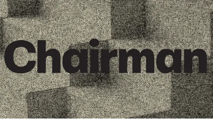
8 Jun 2026Chairman is a utilitarian neo-grotesque that grows quieter at headline sizes and sparkier in running text, with three width systems that shape the rhythm of paragraphs.
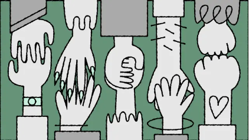
21 May 2026Today, in celebration of global accessibility awareness day, we are launching acccessibility.tools - a free toolkit built for designers who want to create more inclusive work.
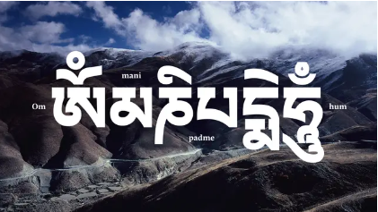
21 May 2026We already support 26 writing scripts, and today we add another:Tibetan,created in the 7th century to translate Buddhist texts, has barely changed since - while the spoken languagee has shifted dramatically.